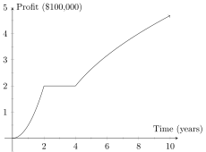
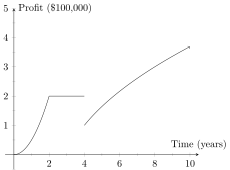
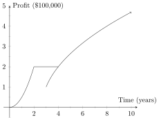

This section discusses the geometric view of piecewise functions.
We’ve discussed several types of functions at this point, as well as common uses for each. Unsurprisingly however, the real world often does not conform to the ideal function types. Even if the data for your model did perfectly conform to your function, there’s a good chance that changes will occur at some point down the line. Contrary to popular belief however, mathematics doesn’t need to idealize reality in order to model it.
Perhaps the most common and simple (as such things go anyway) difficulties with models is when the data changes the function it conforms to at various points in time. The obvious solution would be to make a different function for each time period and somehow ’stitch’ them together. This is exactly what a piecewise function does.Suppose, for example, you are graphing the profit trends for your company over the first decade of it’s operation. For the first two years, your company had a cornerstone on the market for its product; and after some marketing, profits shot up quickly. In the second year however, competition and difficulties in R&D stagnated profits, and your company just barely managed to keep profit levels stable, neither increasing or decreasing, for two years. Finally after those two years of research and development and corporate consolidation, your company began expanding again, albeit not as quickly as it did before.
There is clearly no single function that comes to mind to represent all these very different segments of growth and difficulty simultaneously. Indeed, just by the description we can see that the difficulty is that there are three very distinct periods of time in which the nature of the profit is very different. Any one of these periods should be something we can write a function for, but a single function for all three simultaneously would be incredibly difficult.
Nonetheless we know the graph should look something like the following:

As we can see, this graph literally appears to be three distinct functions stitched together at and . This is exactly the purpose of piecewise functions. As we will see in the analytic viewpoint section, writing this function is “simple”, yet it can be subtle and tricky. The real trouble comes in at the points where you are trying to stitch the functions together; there is no reason (mathematically) that the functions must actually lineup and stay connected. However, that is usually what you want in your models, meaning you need to be careful when writing the function. Take, for example, this slightly altered version of the same graph:

A small typo, or miscalculation can lead to some very strange looking model graphs, and worse (as we’ll see in the analytic section) these typos can be incredibly difficult to spot purely based on the function, without a graph.
Worse even, the thing we get may not be a function at all. Consider, for example, the following;

This graph clearly fails the vertical line test, and isn’t even a function. Fortunately this particular issue is something that can be easily noticed in the analytic form of the function, without needing a graph.
So, in short, the point of a piecewise function is to give us a tool that allows us to ‘stitch together’ different functions, one after another, to account for when circumstances change during a model’s domain and different functions are needed to represent various segments of the model. Exactly how we do that analytically will be covered in the next tile.